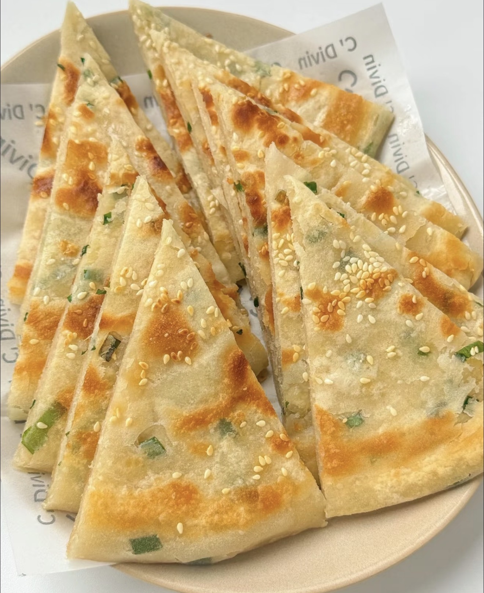
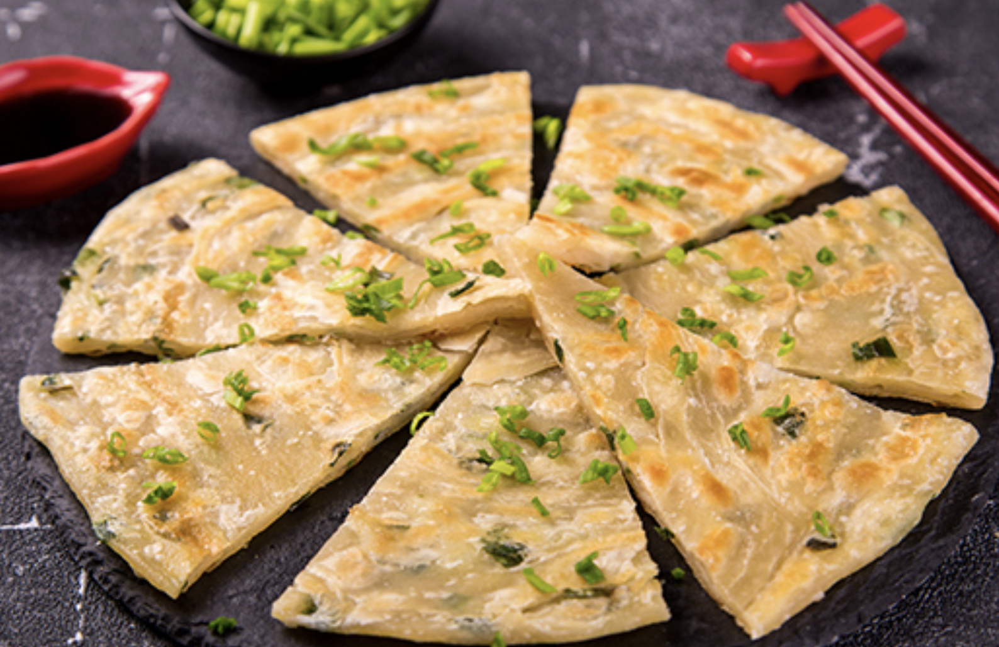

Scallion Pancake
Crispy layered flatbread with scallions.
Ingredients
- Flour
- Hot water
- Scallions
- Salt
- Vegetable oil
Directions
- Mix flour with hot water to form dough.
- Knead and rest.
- Divide and roll out.
- Add oil, salt, and scallions.
- Roll and coil into layers.
- Flatten into pancakes.
- Pan-fry until golden and crispy.
- Cut and serve.